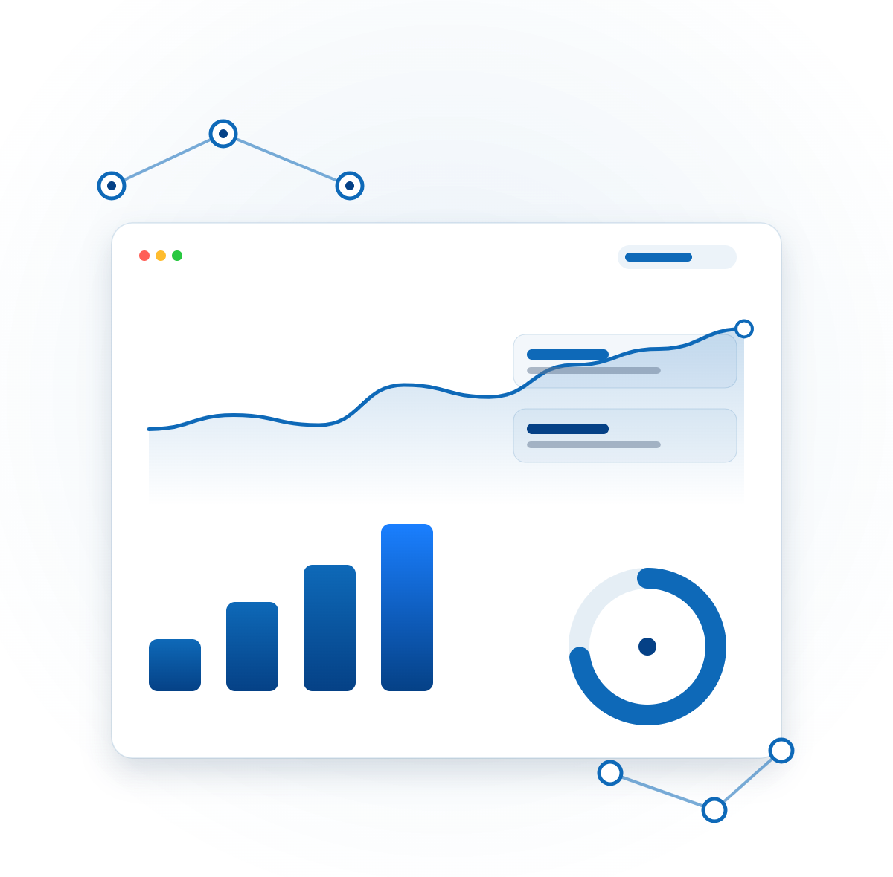
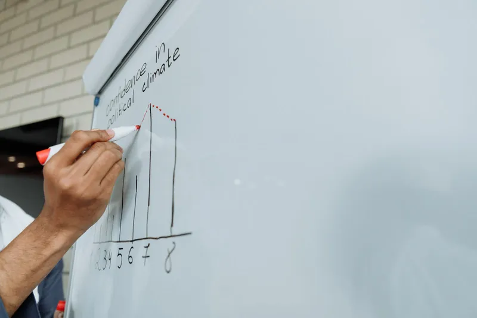
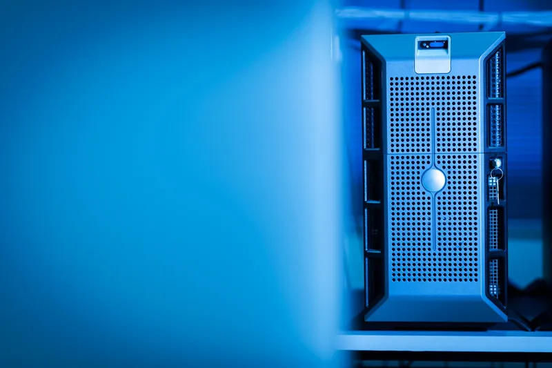

We redesign how your business operates — then build the data and AI layer that keeps it performing.
Process first. Technology second. Always.

Seven connected services that bridge the gap between business process and business intelligence — with automation and AI as the connective layer.

Map, analyse and redesign how work actually flows — before any technology is chosen.
Automate the repetitive steps inside a redesigned process — never layered over a broken one.
Move legacy estates to Microsoft Fabric — SSIS→ADF, SQL→OneLake — with zero data loss.
Turn governed process data into decisions with Microsoft Fabric and Power BI.
Process, intelligence and automation aren't separate projects. We bring all three together so the gains compound.

We map and redesign how work actually flows — the foundation everything else is built on.
We turn governed process data into a live decision layer your whole organisation can trust.
We add AI agents and automation as the connective layer that keeps the system performing.
We surface process gaps, bottlenecks and risk points before they become incidents.
Business process and data engineering in one team — no handoffs, no translation loss.
Cycle time, error rates, handoff delays and automation coverage — not dashboard aesthetics.
Project, cost and supply-chain visibility.
Production, inventory and demand intelligence.
Claims, member and regulatory analytics.
Utilisation, delivery and margin reporting.
Map the current process and its data.
Architect the optimised future state.
Implement the platform and automation.
Night Factory™ agents monitor it autonomously.
Night Factory™ is our autonomous AI layer. It runs overnight on your platform — refreshing, reconciling and watching — so the answers are ready before your team walks in.
Activate Night Factory™ →Pipelines refresh and reconcile overnight, ready by morning.
Outliers and breaks are caught and flagged before they spread.
Your briefing is generated and waiting before 7am.
New documents are indexed and made retrievable automatically.
Start with a no-obligation process audit. We'll map it, benchmark it, and come back with a concrete plan.